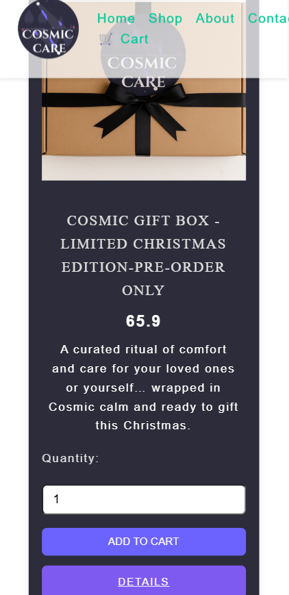

I design interfaces that feel like home — intuitive, scalable, and emotionally intelligent.
Developer. Creative Director. Problem Solver. I blend technical precision with cosmic calm to build experiences that empower users and elevate brands.
üíª Technical Focus

Crafting with Code & Care
- React & React Native developer focused on responsive UI
- Built scalable e-commerce and parking apps with cloud integration
- Founder of Cosmic Care — emotionally resonant brand storytelling
- Iterative design thinker: from concept to customer experience
üë©‚Äçüíª My Journey into Web Development

üëã, I‚Äôm Petya Dimitrova ‚Äî a Computing and IT student with a passion for building thoughtful digital experiences. My journey into web development began during a difficult chapter in my life, when I realized I wanted a career that brings joy and meaning, not just a paycheck.
Since childhood, I’ve been drawn to design and art — anything that makes people feel something. That curiosity led me to explore what lies behind the beautiful websites we all use. After completing a few introductory courses, I enrolled in the Purple Beard Bootcamp, which became my first real step into tech.
From there, I’ve taken many small but meaningful steps: building prototypes, experimenting with frameworks, and deepening my skills through my academic journey with The Open University. Each project has helped me grow not just as a developer, but as a creative problem-solver with a people-first mindset.
My Approach to Problem Solving
I’m naturally detail-oriented and persistent, and I approach every project with deep focus and responsibility. Like most developers, I often encounter challenging bugs or moments where the code feels stuck — but I never give up.
My problem-solving methodology involves thorough review, trace analysis, and identifying the root cause with care and precision. I believe that persistence, curiosity, and structured debugging are key to building reliable and meaningful digital experiences.

I’ll admit — my determination to solve a problem can sometimes become all-consuming. I care deeply about getting things right, and that intensity occasionally leaves me mentally drained. But I see this as a strength: it reflects how invested I am in the outcome and how much I value clarity and resolution. I’ve learned to balance this drive with rest and reflection, which helps me return to challenges with fresh perspective.
My Problem-Solving Process
I ask the right questions before writing the first line of code.
I test assumptions, refine visuals, and build for scale.
Case Studies
Yorvik Parking App (2025)

Streamlined multi-user dock boat parking prototype with real-time updates using TypeScript.
Food Web App (2023)

Personalized receipts curation for a local community using React Router.
Event Landing Page (2024)

Simplified ticket purchasing for an international convention using JavaScript and React.
Cosmic Care(e-commerce shop) (2025)
From Branding thru design and coding.A fully functional e-commerce shop in dual modes(test and real)
Cosmic Care is more than a brand — it's a ritual of clarity, trust, and connection.
In a world where technology meets emotion, I founded Cosmic Care to bridge the gap. At the heart of my designs is a commitment to clarity, transparency, and resilience. I design with empathy and technical rigor to foster genuine connection.
Connect with Me
Let’s build something meaningful — whether it’s a product, a story, or a cosmic experience.